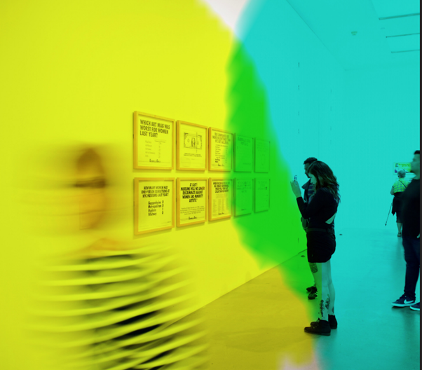

In June 2021, the Centre for Data, Culture & Society and the Research Office of the College of Arts, Humanities and Social Sciences held three online workshops focused on adapting approaches to research in the context of ongoing remote and hybrid working. Each workshop focused on one research area that has been significantly impacted by social distancing measures, with the aim of capturing ideas, resources, advice and tips from the community to share more widely. As a part of this work we were also able to resource the development of ethics guidance for social media research, and to gather a set of 'research adaptation case studies' provided by local researchers. While there is now a considerable amount of general resources and guidance available, we wanted to explore what is required locally for our community to move forward and invest in developing hybrid and remote research methods.
While lots of collections have been digitised in recent years, many research projects rely on physical access to materials held in libraries, archives, and museums. This document provides advice for those doing archival research via remote and hybrid working.
Explore our Archives, Collections & Access in ZenodoFrom focus groups and interviews to psychology experiments, many research methods involve the participation of human subjects. This guidance focuses on adapting to and capitalising on digital tools for participatory research.
Explore our Participatory, Observation & Face to Face Research Methods in Zenodo
Engaging stakeholders and the public is an important aspect of most research projects, and a key research practice for artists and curators. This guidance explores some of the issues involved in conducting outreach and hosting exhibitions under socially distanced conditions.
Explore our Public Engagement, Events & Exhibitions in ZenodoDuring COVID-19 researchers have had to adapt their research methods to ensure safe data collection practices. Consequently, many more researchers have considered the potential of social media as a tool to facilitate their research. However, these methods of data collection raise unique and complex ethical issues that require careful consideration. This document has been produced in collaboration between CAHSS Research Ethics Committee and the Edinburgh Centre for Data, Culture and Society (CDCS).
Sarah Van Eyndhoven, a PhD candidate in Linguistics & English Language who researches 18th-century Scots and identity, discusses the challenge of her planned research materials in the National Library of Scotland, National Records of Scotland and University of Edinburgh Special Collections being made inaccessible. She describes how locating alternative digital materials through the National Library of Scotland’s Data Foundry and Scottish History Society Publications enabled her to continue her research. She also discusses how the inaccessibility of her planned research materials led to delays and changes in her research timetable, which she used as an opportunity to learn new technological skills she hadn’t found time for before (for example, Transkribus).
Dr James Cook, Lecturer in Early Music, describes facing similar problems accessing historical documents, and the ways in which digital catalogues and digitised materials offered a suitable alternative for his purposes. He also discusses creating an online database as a research output, an activity which has the benefit of increasing the quantity and quality of information that is accessible to future researchers.
Barbara Dzieciatko, a PhD candidate in Education who researches teachers’ communities of practice, gives an in-depth account of trying to find a suitable tool to collect data from online forums and evaluates rvest using RStudio, Textblob using Notable, and Beautiful Soup using Anaconda. She outlines some of the challenges she encountered, which included a steep learning curve, a large time cost associated with learning and trialling new tools, issues with tools and packages being outdated, and online tutorials not always providing adequate detail and support.
Dr Kate Miltner, Train@Ed Postdoctoral Fellow at the Centre for Research in Digital Education, discusses running into difficulties finding relevant research materials about mid-century computing schools and describes her journey through the data sources ProQuest Historical Newspapers digital archive and the Internet Archive. Kate summarises some of the challenges she encountered: an overwhelming amount of material and yet archives not being exhaustive, a bias towards English-language and Western sources, the requirement of digital fluency and keyword search skills, and the politics of which archives are digitised.
Dr Lauren Hall-Lew, Reader in Linguistics and English Language, introduces the team, background, methodology and aims of the Lothian Diary Project. She discusses how a pre-coronavirus strategy of predominantly face-to-face interviews was successfully substituted with audio and video self-recordings made on participants’ personal portable devices, and how the descriptive information normally gathered through interviews was instead collected through surveys administered using Qualtrics (see Online Surveys and Questionnaires Section). Recruitment of participants for these research methods was challenging and required using multiple channels.
Dr Ailsa Niven, Senior Lecturer at the Moray House School of Education and Sport, introduces a number of approaches to successfully using online questionnaires in participatory research. The video discusses the two main survey tools approved by the University, which are the Online Survey tool and Qualtrics (see Online Surveys and Questionnaires Section), and also some of the ethical considerations. A second video delves deeper into the ethical considerations of conducting participatory research in an online environment, and points to a frequently-updated guidance document created by the College Research Ethics Committee.
Dr Marlies Kustatscher, Lecturer in Childhood Studies at Moray House School of Education and Sport, shares reflections on a research project using participatory digital methods with young people. The video covers how the inability to conduct in-person research was overcome by using multi-modal and creative approaches, and offers tips on conducting research using these methods.
Dr Jule Hildmann, Senior Research Fellow at Moray House School of Education and Sport, shares her experience of using gamification in an online survey to address the challenge of generating responses. The respondent takes on a role of a participant in a TV quiz show. The video discusses how survey design increased engagement and retention but also surfaced challenges around issues of sensitivity and data security.